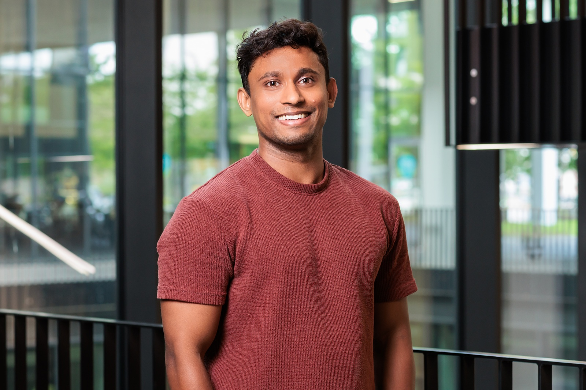
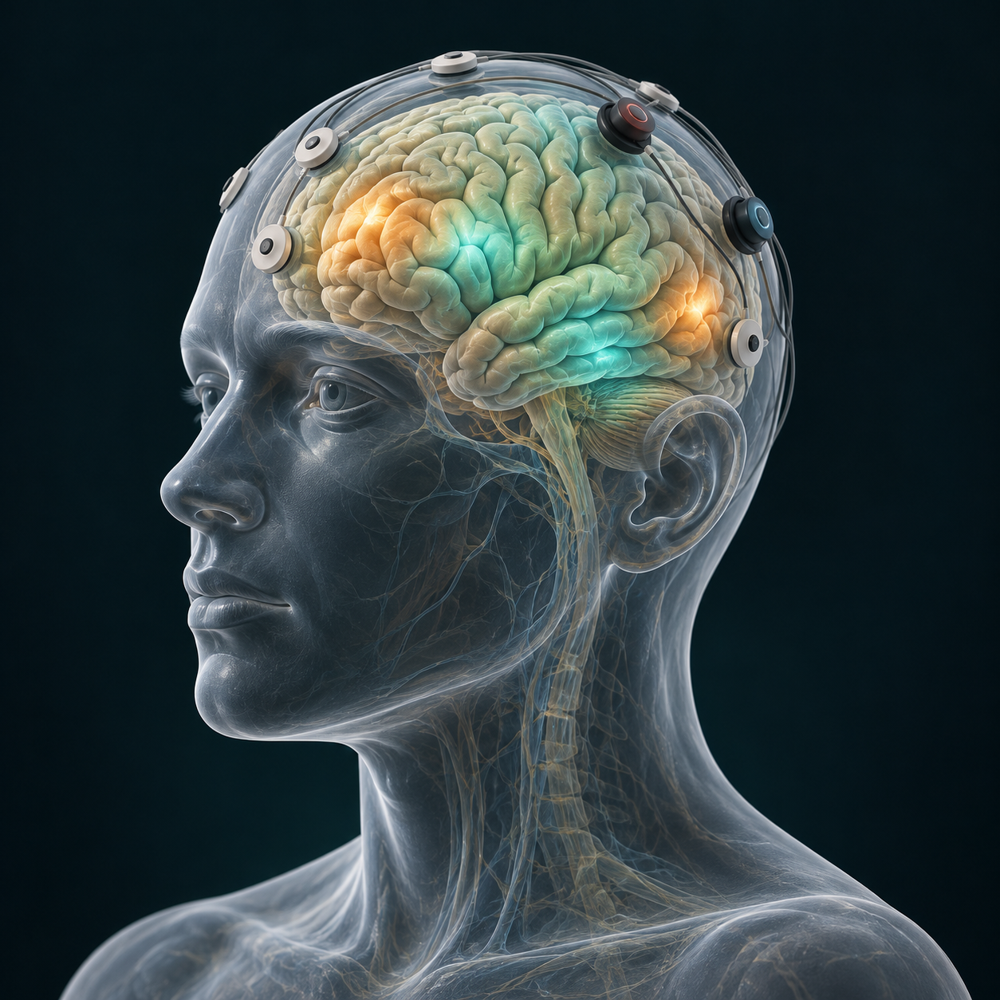

01 — NEURAL DECODING↗
Giving silent speech
a new channel.
Decoding imagined speech from EEG through signal representations, functional connectivity and transfer learning.
Explore speech BCI publications ↗RESEARCH SCIENTIST · UNIVERSITY OF LUXEMBOURG
LUXEMBOURG, EUROPE ↗ARTIFICIAL INTELLIGENCE & NEUROTECHNOLOGY
Research Scientist, AI Instructor.
Understanding brains. Building intelligence.
I work at the intersection of neuroscience, signal processing and computer science, using EEG, fNIRS and deep learning to understand brain activity and build better brain–computer interfaces.
Open to research & industry opportunities

PhD · Brain–computer interfaces
IIT Madras · PhD research excellence · 2021–22
AI research · Neurotechnology · Applied ML
THE PERSON BEHIND THE RESEARCH
I’m a research scientist in the Department of Computer Science at the University of Luxembourg, with a foundation in biomedical engineering and applied electronics.
My work connects theoretical AI, biomedical signal and image processing, deep learning and human–computer interaction. I investigate how these methods can help us understand neural activity and design technology around people.
University profile ↗Indian Institute of Technology Madras
Institute Research Award · PhD Research Excellence · 2021–22
A WINDOW INTO MY RESEARCH
I study the relationship between brain activity and human experience—from imagined speech to cognitive workload, affective states and perception.
Scalp electrodes record electrical potentials associated with brain activity. I use signal processing and machine learning to study patterns in these recordings.
Choose a research lens to explore →

3D illustration with animated overlays · Illustrative signals, not measured data
01 / RESEARCH DIRECTIONS
My work brings together brain sensing, machine learning and human–computer interaction—with applications in communication, cognition and immersive experiences.
Decoding imagined speech from EEG through signal representations, functional connectivity and transfer learning.
Explore speech BCI publications ↗Improving EEG-based transformer models for silent speech decoding. My ICASSP 2026 work explores a Graphormer-based approach using spatial and spectral priors.
Read the ICASSP 2026 paper ↗Research with EEG and functional near-infrared spectroscopy (fNIRS), including brain activity in musical performance and psychological studies.
SAMUSE symposium programme ↗Modeling affective states, cognitive workload and time perception to understand human experience in virtual reality and adaptive interfaces.
Explore virtual reality publications ↗THE CONNECTING THREAD
Making sense of complex signals.
Making technology work for people.
02 / SELECTED PUBLICATIONS
Peer-reviewed work spanning neural decoding, affective computing and immersive interaction.
University publication record ↗11 selected publications
S. Duraisamy, E. J. M. Delaunay & L. A. Leiva
S. Duraisamy, E. J. M. Delaunay & L. A. Leiva (2026). Graph-Biased EEG Transformers for Silent Speech Decoding. ICASSP. https://doi.org/10.1109/ICASSP55912.2026.11465134
S. Duraisamy, B. A. Yilma, P. Emami & L. A. Leiva
S. Duraisamy, B. A. Yilma, P. Emami & L. A. Leiva (2026). Outcome-aware Evaluation of Recommendation Rankings in Art Therapy Using Multimodal Physiological Utility. ACM. https://doi.org/10.1145/3799682.3841018
S. Duraisamy, N. T. Attygalle, P. Emami, J. Vanderdonckt & L. A. Leiva
S. Duraisamy, N. T. Attygalle, P. Emami, J. Vanderdonckt & L. A. Leiva (2026). Evaluating Real-Time Adaptive Interfaces through EEG-derived and Self-reported Mental Workload Indicators. EICS Companion. https://doi.org/10.1145/3807968.3810932
K. Latifzadeh, P. Emami, F. Emami, S. Duraisamy & L. A. Leiva
K. Latifzadeh, P. Emami, F. Emami, S. Duraisamy & L. A. Leiva (2026). Pixels, Plants, and People: Affective Evaluation of Urban Green Spaces. CHI. https://doi.org/10.1145/3772318.3791826
S. Duraisamy, M. Rekrut & L. A. Leiva
S. Duraisamy, M. Rekrut & L. A. Leiva (2025). Functional Connectivity and Hilbert-Based Features for Covert Speech EEG Variability Analysis and Classification. Interspeech. https://doi.org/10.21437/Interspeech.2025-1986
S. Duraisamy, M. Dubiel, M. Rekrut & L. A. Leiva
S. Duraisamy, M. Dubiel, M. Rekrut & L. A. Leiva (2025). Transfer Learning for Covert Speech Classification Using EEG Hilbert Envelope and Temporal Fine Structure. ICASSP. https://doi.org/10.1109/ICASSP49660.2025.10888880
S. Niknam, S. Duraisamy, J. Botev & L. A. Leiva
S. Niknam, S. Duraisamy, J. Botev & L. A. Leiva (2025). Brain Signatures of Time Perception in Virtual Reality. IEEE TVCG. https://doi.org/10.1109/TVCG.2025.3549570
S. Niknam, S. Duraisamy, J. Botev & L. A. Leiva
S. Niknam, S. Duraisamy, J. Botev & L. A. Leiva (2025). EEG-Based Prediction of Perceptual Timing Errors in Virtual Reality. ISMAR. https://doi.org/10.1109/ISMAR-Adjunct68609.2025.00037
S. Duraisamy, N. Roeser, M. Dubiel & L. A. Leiva
S. Duraisamy, N. Roeser, M. Dubiel & L. A. Leiva (2025). An Adaptive Brain-Computer Interface Game with Blink Controls and Cognitive State Monitoring. IUI Companion. https://doi.org/10.1145/3708557.3716365
A. Lopez-Cardona, P. Emami, S. Idesis, S. Duraisamy, L. A. Leiva & I. Arapakis
A. Lopez-Cardona, P. Emami, S. Idesis, S. Duraisamy, L. A. Leiva & I. Arapakis (2025). A Comparative Study of Scanpath Models in Graph-Based Visualization. ETRA. https://doi.org/10.1145/3715669.3725882
S. Haddad, K. Latifzadeh, S. Duraisamy, J. Vanderdonckt, O. Daassi, S. Belghith & L. A. Leiva
S. Haddad, K. Latifzadeh, S. Duraisamy, J. Vanderdonckt, O. Daassi, S. Belghith & L. A. Leiva (2024). Good GUIs, Bad GUIs: Affective Evaluation of Graphical User Interfaces. UMAP. https://doi.org/10.1145/3627043.3659549
No matching publications. Try another topic or search term.
03 / CODE & PROJECTS
Public repositories connecting physiological signals, data processing and interactive systems.
Explore the public repository for speech-BCI data processing.
Jupyter Notebook View repository ↗[ ⌁ ]CONNECTED NEUROTECHNOLOGYDevice integration, a web platform and physiological data streaming.
BCI systems View repository ↗[ ↗ ]HUMAN–COMPUTER INTERACTIONInvestigating mental workload through patterns of mouse movement.
Python View repository ↗RESEARCH & INDUSTRY EXPERIENCE
Experience across academic research, machine learning leadership and industry data science.
Research Scientist · Department of Computer Science
Manager of Machine Learning
Data Science Manager
Data Scientist
Big Data Analyst
05 / TEACHING & KNOWLEDGE SHARING
At the University of Luxembourg, I teach Deep Learning and Human–Computer Interaction to master’s students in the Department of Computer Science, including the Data Science master’s programme.
As a freelance AI expert and instructor at Digital Learning Hub AI Academy, I teach working professionals deep learning, transformers and large language models—connecting theoretical foundations with practical applications.
Discuss a teaching opportunity ↗Master’s-level teaching · University of Luxembourg
Master’s-level teaching · Department of Computer Science
Digital Learning Hub AI Academy · Deep learning, transformers & LLMs
OPEN TO RESEARCH & INDUSTRY OPPORTUNITIES
LUXEMBOURG · CONNECTING GLOBALLYExploring a role in AI, biomedical engineering or neurotechnology?
I’d welcome a conversation about how my research can contribute.
Personal email